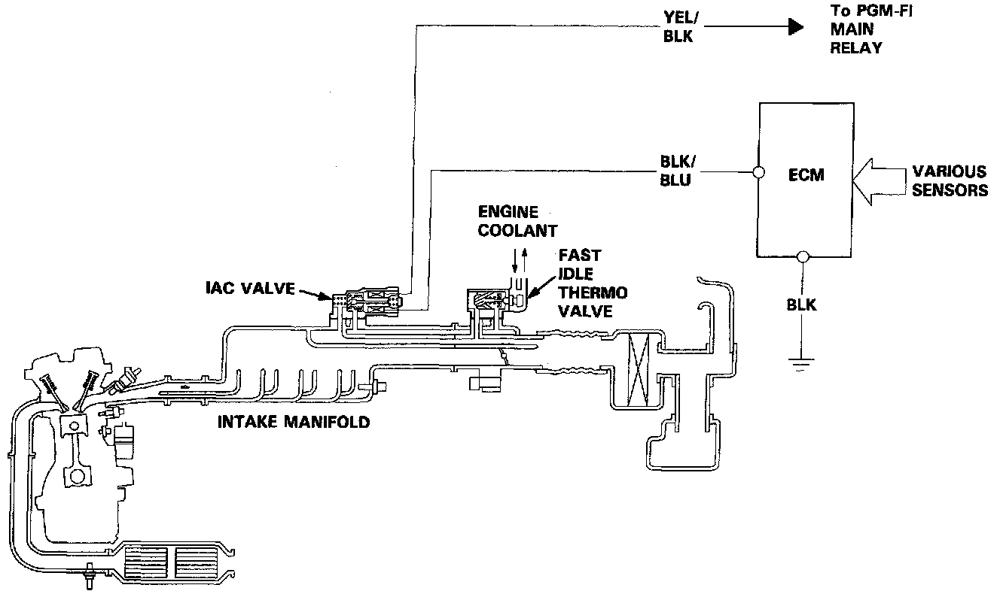

Idle Control System
System Description:

PURPOSE
The Idle speed of the engine is controlled by the Idle Air Control (IAC) Valve.
OPERATION
The valve changes the amount of air bypassing into the intake manifold in response to electric current controlled by the Engine Control Module (ECM). When the IAC valve is activated, the valve opens to maintain the proper idle speed.